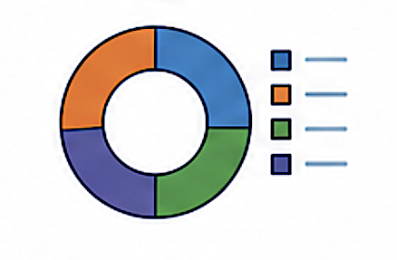

SourceApportionment
{kind=link}

Attributes
Attribute Code |
Attribute Name |
SQL DB Data Type |
ReportNet3 Data Type |
Properties |
Code list |
Related table(s) |
In Reporting |
|---|---|---|---|---|---|---|---|
SAP_01 |
CountryCode |
varchar(2) |
string |
PK |
|||
SAP_02 |
SourceApportionmentId |
varchar(50) |
string |
PK |
ComplianceAssessmentMethod |
||
SAP_03 |
ContributionType |
varchar(20) |
string |
PK |
|||
SAP_04 |
SpatialScale |
varchar(50) |
string |
PK |
|||
SAP_05 |
SourceSector |
varchar(50) |
string |
PK |
|||
SAP_06 |
PollutantId |
int |
numeric |
||||
SAP_07 |
Contribution |
decimal(8,2) |
numeric |
||||
SAP_08 |
SourceApportionmentDocumentId |
varchar(150) |
string |
Documentation |
|||
SAP_09 |
Country |
varchar(20) |
string |
N |
|||
SAP_10 |
Pollutant |
varchar(50) |
string |
N |
|||
SAP_11 |
Deletion |
bit |
boolean |
N |
Note
Country, Pollutant and Deletion are Reference attributes without a corresponding attribute in the reporting data model.
Attribute details
SAP_01 - CountryCode
Content
Country or territory ISO2 code.
In Reporting
SAP_02 - SourceApportionmentId
Content
Identifier of the source apportionment, given by data provider.
In Reporting
SAP_03 - ContributionType
Content
Type of contribution (e.g., background, increment).
In Reporting
SAP_04 - SpatialScale
Content
Geographical scope of the contribution (e.g., urban, local, regional, national).
In Reporting
SAP_05 - SourceSector
Content
The sector responsible for emissions (e.g., traffic, industry, residential heating).
In Reporting
SAP_06 - PollutantId
Content
Code of the air pollutant for which the contribution is being assessed.
Remarks
AirPollutantCode: must correspond to the AirPollutantCode of the AttainmentId.
In Reporting
SAP_07 - Contribution
Content
Estimated contribution of the specified source sector to air pollution levels [%].
Remarks
The value is understood as applicable to AirPollutionLevel adjusted for natural sources. Therefore contributions should not include the natural sources, should be given as % and sum up to 100% within SourceAppId.
In Reporting
SAP_08 - SourceApportionmentDocumentId
Content
Identifier of the documentation on source apportionment.
In Reporting
SAP_09 - Country
Content
Name of the country.
In Reporting
N - No corresponding reporting attribute.
SAP_10 - Pollutant
Content
Name of the air pollutant being measured, as per Data Dictionary standards.
In Reporting
N - No corresponding reporting attribute.
SAP_11 - Deletion
Content
Flag to indicate that this element must be deleted.
In Reporting
N - No corresponding reporting attribute.